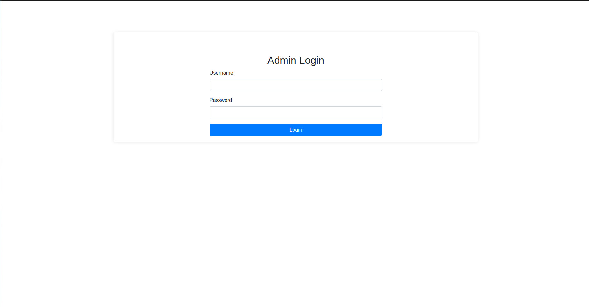
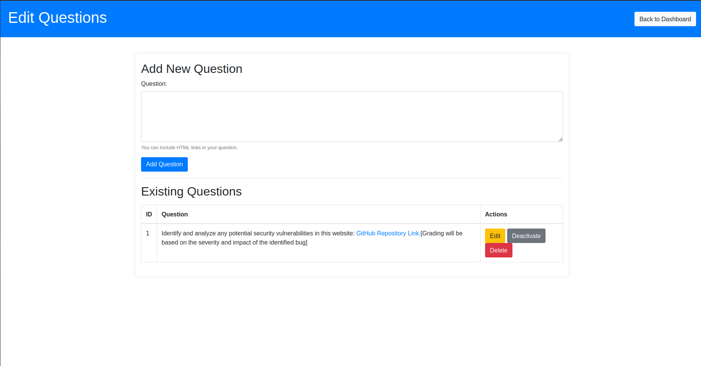
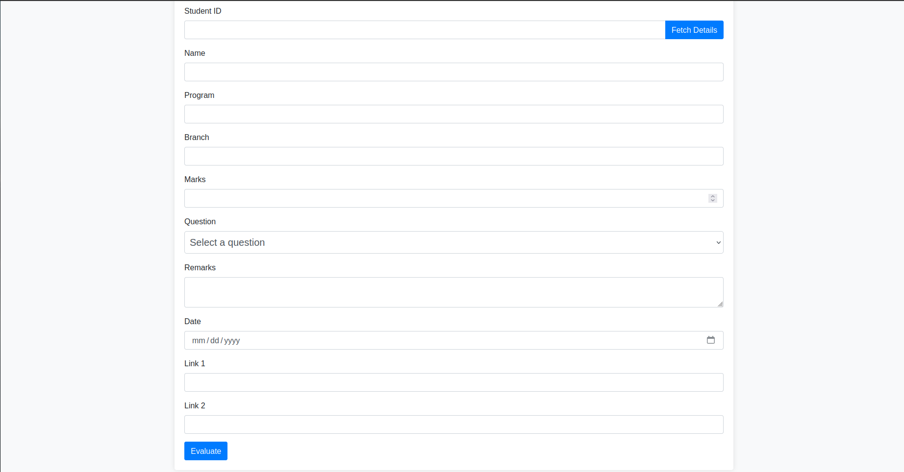
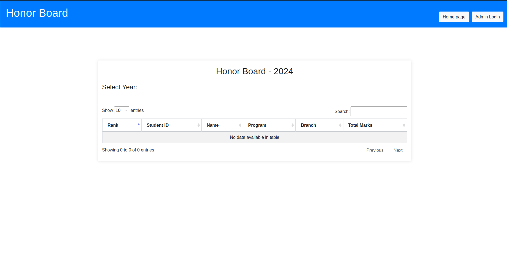

Introduction
Welcome to the documentation for the Flask Web Application. This application is designed to manage and evaluate student questions, marks, and records. It includes features for administrators to log in, manage questions, evaluate student submissions, and view an honor board.
In this documentation, you will find information about how to install and run the application, as well as details about its structure and features.
Installation
To get started with the Flask Web Application, follow these steps:
-
Clone the Repository:
git clone https://github.com/Pranay75/flask_app.git cd flask_app -
Create and Activate a Virtual Environment:
python -m venv venv source venv/bin/activate # On Windows use `venv\Scripts\activate` -
Install the Required Packages:
pip install -r requirements.txt -
Rename the
.env.exampleto.envand update File to your credentials:SECRET_KEY=your_secret_key ADMIN_USERNAME=admin_username ADMIN_PASSWORD=admin_password -
Run the Application:
python app.py
You are now ready to start using the Flask Web Application.
Configuration
Configure your Flask application by setting up the environment variables.
- Configure Environment Variables:
Ensure the
.envfile contains the following:SECRET_KEY=your_secret_key ADMIN_USERNAME=admin_username ADMIN_PASSWORD=admin_password
Refer to Running the Application to start the server.
Application Structure
The Flask web application is organized into the following structure:
.
├── app.py
├── README.md
├── requirements.txt
├── .env
├── templates/
│ ├── index.html
│ ├── login.html
│ ├── admin_dashboard.html
│ ├── about.html
│ ├── edit_questions.html
│ ├── evaluate_students.html
│ ├── view_solved.html
│ ├── view_all_questions.html
│ └── honor_board.html
├── static/
└──docs
Description of Each Component
app.py: The main application script that contains the Flask app and route definitions.README.md: The file containing project overview and instructions.requirements.txt: Lists the dependencies required to run the application..env: Environment configuration file that contains sensitive information such asSECRET_KEYand admin credentials.templates/: Directory containing HTML templates used by Flask to render views.index.html: Template for the home page displaying active questions.login.html: Template for the admin login page.admin_dashboard.html: Template for the admin dashboard.about.html: Template for the about page.edit_questions.html: Template for managing questions.evaluate_students.html: Template for evaluating student submissions.view_solved.html: Template for viewing solved questions.view_all_questions.html: Template for viewing all questions.honor_board.html: Template for displaying the honor board.
static/: Directory for static files such as CSS, JavaScript, and images.docs/: Directory for documentation files in Markdown format, used bymdBook.
For more information on how to get started and configure the application, refer to the Installation and Configuration sections.
Routes and Views
The application includes various routes and views. Here’s an overview:
Public Routes
/- Home page displaying active questions./about- About page.
Admin Routes
/admin-login- Login page for administrators./logout- Logout route for administrators./admin-dashboard- Dashboard for administrators./edit-questions- Page to add, edit, delete, and deactivate questions./evaluate_students- Page to evaluate student submissions./view_solved- Page to view all solved questions./view_all_questions- Page to view all questions./honor-board- Honor board displaying students based on marks.
API Routes
/get_student_details- Fetch details of a student by student ID.
For detailed information about each route, refer to Public Routes, Admin Routes, and API Routes.
Public Routes
/
Displays the home page with a list of active questions.
/about
Shows the about page with information about the application.
Admin Routes
/admin-login
- Method: GET, POST
- Description: Admin login page. Allows administrators to log in using credentials.
/logout
- Method: GET
- Description: Logs out the administrator by clearing the session.
/admin-dashboard
- Method: GET
- Description: Admin dashboard accessible after logging in.
/edit-questions
- Method: GET, POST
- Description: Admins can add, edit, delete, and deactivate questions.
/evaluate_students
- Method: GET, POST
- Description: Allows admins to evaluate students, record marks, and add evaluations.
/view_solved
- Method: GET
- Description: Displays a list of all solved questions.
/view_all_questions
- Method: GET
- Description: Shows all questions, both active and inactive.
/honor-board
- Method: GET
- Description: Displays the honor board with top students based on their total marks.
API Routes
/get_student_details
- Method: GET
- Description: Fetches details of a student by student ID.
- Parameters:
student_id(query parameter): The ID of the student.
- Returns: JSON object with student details (name, program, branch).
Models
The application uses the following database models:
Question Table
CREATE TABLE Question (
question_id INTEGER PRIMARY KEY AUTOINCREMENT,
question TEXT NOT NULL,
is_active BOOLEAN DEFAULT TRUE
);
Students Table
CREATE TABLE Student (
student_id VARCHAR(20) PRIMARY KEY,
name VARCHAR(100) NOT NULL,
program VARCHAR(100) NOT NULL,
branch VARCHAR(100) NOT NULL
);
Mark Table
CREATE TABLE Mark (
id INTEGER PRIMARY KEY AUTOINCREMENT,
marks INTEGER NOT NULL,
year INTEGER NOT NULL DEFAULT (strftime('%Y', 'now')),
student_id VARCHAR(20) NOT NULL,
FOREIGN KEY (student_id) REFERENCES Student(student_id)
);
Solved Table
CREATE TABLE Solved (
id INTEGER PRIMARY KEY AUTOINCREMENT,
question TEXT NOT NULL,
student_name VARCHAR(100) NOT NULL,
student_id VARCHAR(50) NOT NULL,
remarks TEXT,
marks INTEGER NOT NULL,
link1 VARCHAR(200),
link2 VARCHAR(200),
date TIMESTAMP DEFAULT CURRENT_TIMESTAMP
);
Key Features
The Flask Web Application includes several key features:
Admin Authentication
- Login: Admins log in using credentials from the
.envfile.  - Session Management: Sessions are used to track admin login status.
- Logout: Admins can log out, which clears their session.
Question Management
-
Add Questions: Admins can add new questions.
-
Edit Questions: Modify existing questions.
-
Delete Questions: Remove questions from the database.
-
Deactivate Questions: Toggle questions between active and inactive states.

Student Evaluation
-
Record Marks: Admins can record marks for students.
-
Add Evaluations: Include details about student submissions.
-
Update Records: Existing records can be updated with new information.

Honor Board
-
Display Students: Shows a ranked list of students based on their total marks.
-
Filter by Year: View the honor board for specific years.
